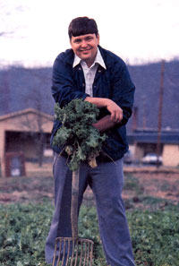
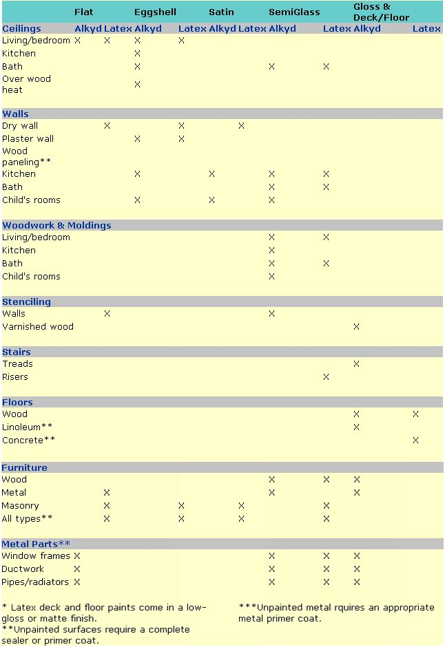

Brent Elswick on
A roundup of the best new vegetable varieties for '88
There are literally hundreds of new vegetable varieties on the market this season, and-to save you both time and potential disappointment-I've already tested many of them in my garden. Here are some of my winners for 1988. Addresses for the seed companies I mention can be found on page 126.
Lettuce
Though 1987's weather wasn't as bad as that of '86, an unusual 18-inch April snowfall here in the Appalachian Mountains, followed by several rainless weeks, didn't exactly provide optimum growing conditions for early, cool-weather crops. Even so, some of my trials thrived. For example, Lollo Biondo from Le Marche Seeds proved to be a sensational new looseleaf lettuce. Maturing in around 55 days, it's akin to last year's highly recommended Lollo Rosso, and its bright, frilly, yellow-green leaves, tinged with red, are as prettyto look at as they are tender and tasty.
Biondo a Foglie Lisce (don't try to pronounce it, just grow it) is another wonderful leaf lettuce, from The Cook's Garden. Its smooth, pale green leaves can be picked as early as a month after seeding.
This year, Shepherd's Garden Seeds has one of the best Batavian-type lettuces-so esteemed by the French-that I've ever grown. Called Antina, its pretty, medium-green leaves edged with red are juicy yet crunchy. Left to grow to maturity, they form crisp rosettes; immature leaves can serve as a most acceptable loose-leaf lettuce. Antina stands up well to warm weather.
There are three fine new butterhead types on the market. Cobham Green, introduced by Bountiful Gardens, matures in 65 days and stands up to heat well. Musette, a similar variety from Garden Import, matures at the same time and has large, medium-green hearts that remain in good eating condition longer than those of most lettuces on the market. Musette is also resistant to lettuce virus. Fisher's Garden Store specializes in early maturing and midget types, and I especially like its Green Mignonette; the small heads are extremely crisp and tender.
The most unusual crisphead lettuce I've found is The Cook's Garden's superb La Brillante, which combines the shiny leaf of a crisphead with the unmatched tenderness of a fine butterhead. And though Stokes' South Bay is fairly late to mature, the taste of its deeply cut, dark green foliage is worth the wait. It can also claim the best disease resistance of any crisphead I've grown.
Spinach and Other Greens
Popeye would be powerfully tempted to try gardening this year, because some of the new spinach varieties are exceptional. Mazurka-a bolt-resistant 45-day hybrid from Territorial Seed Company-has large, smooth, very dark green leaves that are mild and slightly sweet. They're delicious either cooked or served raw in salads. Shepherd's offers a smooth-leaved Dutch type called Nordic that is fairly heat-tolerant. Italian Summer, also from Shepherd's, is a crinkled savoy leaf that's wonderful for freezing. This heat-resistant newcomer is especially good for late-summer plantings. Basella Malabar Red Stem, produced by Park Seeds, is a good spinach substitute and a great improvement on the old Malabar types. It can be trained to grow to a height of six feet or more, and-raw or cooked-its thick, dark green leaves and red stems are mild and delicious.
If Japanese-type greens are to your liking, Territorial has a worthy new hybrid called Tokyo Beau. This mizuna variety has extraordinarily sweet leaves that are dark and shiny, and its thick, white stalks make a good celery substitute.
The best new chard in my trials was the Vintage Green hybrid from Gaze Seed Company. Its green leaves with whiteribbed stalks grow in absolute abundance month after month. Erbette Leaf Beet, from The Cook's Garden, is used like chard and is a great cut-and-come-again variety. When cooked, it's nearly impossible to distinguish from spinach.
A few years ago, Twilley Seeds introduced a greatly improved Vates-type kale, Blue Knight, that is one of the best hybrid kales on the market. The firm's new Blue Armour, though, is probably even more prolific. It also seems to be the most suitable of all varieties to winter-over-a definite plus for those wanting greens extremely early in the spring.
Radishes
Shepherd's Roodbol (Dutch for "Redball") is an extra-fancy, ball-shaped radish that won't get woody with size and can be harvested in little more than three weeks. Though similar to Roodbol in many ways, lovely Marabelle from Johnny's Selected Seeds won't take heat as well, but it does grow with an amazing uniformity that's perfect for those wanting a red variety for successive crops. Territorial offers Scarlet Globe (Ribella), one of the more refined Cherry Belle types. Though maturing a few days after Roodbol and Marabelle, it rapidly obtains a large size and resists pithiness.
Stokes Seeds offers two odd new varieties. Its round-shaped Valentine is green and white on the outside, and the inside turns red at maturity. Though strange-looking, this radish is tasty and easy to grow. And Stokes' Martian, shaped like the old French Breakfast-variety, has a long root that's green, not red, at the top. I like the way it looks (and tastes) in salads.
Peas
While most better-known English peas mature about midseason, William Dam Seeds offers Frostiroy that's ready in 55 days and is resistant to fusarium wilt and yellows. The two-and-a-half-foot vines produce a big harvest of tiny, very sweet peas.
Among the midseason types, disease-resistant Aurora from Ed Hume Seeds has fairly short pods brimming with large sweet peas that mature about a week later than Hume's Olympia (which I heartily praised last year). Other fine midseason peas include Tillinghast's Icer No. 93, a greatly improved type of Dwarf Telephone from Tillinghast Seeds, and Freezer 69 from Early Seed & Feed Ltd. Both have strong, sturdy, short vines that produce heavy yields that freeze well.
Park offers two fine new edible-podded peas for '88. Blizzard lives up to its name by producing a literal snowstorm of tasty snow peas on tidy 30-inch plants early in the season. The company's new dwarf snap pea called Sugar Pop has space-saving 18-inch plants loaded with three-inch, sweet, stringless pods. It's disease-resistant as well.
Rogers Brothers' Honey Pod is a real taste sensation. (T & T Seeds lists this variety.) Growing on sturdy, compact vines, its nearly stringless, three-and-a-half- to four-inch pods have a honey-sweet flavor which will make them salad favorites.
Onions and Potatoes
Neither of the two top scallions in my trials is traditional in color. Johnny's Purplette, which is pastel pink when cooked or pickled, is considered a minionion, but-if picked early-it also serves as a most delightful bunching onion. Shepherd's Red Beard is a scallion that can also double as a mini-onion if left to mature. The red color in the stem develops better in cool weather, so plant this variety so it can be harvested in the fall. Both of these unusual alliums are ready in about 60 days.
Rarely do you find a sweet Spanish onion that produces a very large bulb yet has the storing capability of the more pungent types, but Fiesta 61 is just such a rarity. This new wonder from Liberty Seed Company also matures almost two weeks earlier than most Spanish varieties.
If you want a lot of onions to store, Bountiful's James Long Keeping produces small-to medium-size bulbs that are some of the most remarkable keepers ever developed.
Leeks are becoming increasingly popular, and both Le Marche and The Cook's Garden sell the lovely, tasty and very, very firm Blue Solaise that turns almost purple after an autumn cold spell. No variety is better to leave in the garden for winter harvests.
This year, the most outstanding potatoes are yellow-fleshed. Both Tillinghast and Seeds Blum offer Yellow Finn. This excellent all-purpose potato is especially good for baking or boiling. Though not large in size, it's a good producer.
Becker's Seed Potatoes has several good varieties. Yukon Gold is the firm's biggest seller and my personal favorite, because it combines super-culinary and good-storage qualities. Becker's Pink Pearl has long tubers with entirely pink skin. This good-eating potato is disease-resistant, too.
Turnips, Rutabagas and Beets
New turnips are scarce this year, but DeGiorgi Company is proud of a unique variety called All Seasons that will be ready to eat in 28 days. The white-skinned, white-fleshed roots stay sweet much longer in hot dry weather than do those of most varieties.
Among rutabagas, the best I've grown is Stokes' very mild-flavored Altasweet. It's a special cross between the well-known Macomber and Laurentian varieties. Its deep yellow flesh is somewhat sweet, and Altasweet keeps well.
While my trials included quite a few odd-shaped and odd-colored beets, most of the outstanding newcomers are more traditional. Le Marche's Boldet is a full-flavored British canning variety that grows vigorously and keeps well in the field. Big Red, a new hybrid from Porter & Son Seedsmen, is excellent for canning, pickling and using fresh.
One winner that doesn't fit the normal beet mold is Macgregor's Favorite from The Cook's Garden. It has long, dark, carrot-shaped roots with a rich beet taste, and narrow, spear-shaped leaves that are a deep, metallic purple. In fact, the foliage is so lovely I'd like to include it in my flower border.
Carrots and Parsnips
There are so many outstanding new carrots this year that I can only touch on a few. Crunchy Hybrid from D. V. Burrell is one of the very best-and bolt-resistant-Imperator types ever. Its nine-inch, blunt-tipped roots live up to the crunch in their name. Pinetree Garden Seeds offers Berlicummer, a long nantes type that's first-rate in all respects, including flavor and color. Territorial's Tamino, a very fine nantes hybrid, is especially noteworthy because it can be left in the ground nearly all winter without losing its quality.
Midget vegetables have become all the rage lately, and Liberty's Minicore produces three- to four-inch roots that are extra sweet and flavorful. Another fine small carrot is Johnny's Parmex. Its round root matures so early it's often ready to harvest with peas. Unlike other round carrots, Parmex develops a sweet flavor and bright orange color even when immature.
No one knows parsnips like the English, and Johnny's offers Cobham Improved Marrow, developed by England's leading parsnip breeder. This half-long type has an incredibly high sugar content. Another fine-flavored parsnip, Tender & True, is reputed to be the longest variety. Offered by Thompson & Morgan, it's certainly large, as parsnips go, and it doesn't have the usual hard core: On the other end of the spectrum, McFayden's Short Thick is one of the shortest varieties, and its quality is excellent. It's early to mature but will keep in the ground well into winter.
Cole Crops
Among new cabbages, Charmant from Twilley is the best early variety I've seen in a while. It's attractive in appearance, very vigorous and disease-resistant. A Stonehead type, Charmant is ready for harvest in a little more than 50 days.
To bridge the gap between the early and the larger midseason varieties, try Johnny's Perfect Action. Its fine appearance, excellent flavor, and split- and yellows-resistance make it a winner, while Burrell's eight-pound Ocala is one of the better late-season hybrids (110 days) and is ideal for kraut.
Among savoys, Bountiful's Best of All is very early, and has extra-large, solid heads that withstand cold. Drumhead Savoy from Allen, Sterling & Lothrop, which matures a little later, has a delightful interior quality. It's very firm, well-blanched and crisp, yet tender.
Shepherd's offers one of the better new red cabbages. Its Scarlet O'Hara is a Japanese introduction, whose three-pound heads are a brilliant burgundy-red color with a crunchy, mild taste. It matures in about 72 days. Park has a very fine new Chinese cabbage called Green Rocket. This hybrid is a Michihili type that's sweet, crisp and tender-perfect, either for salads or Oriental recipes.
Packman, from S & B Seed Sales, is the top broccoli variety in my trials. The heads on this new hybrid are quite large for an early type, and it has excellent side-shoot development. For warmer areas, try drought-resistant Green Valiant from Midwest Seed Growers. Finally, Shepherd's offers Violet Queen, a hybrid version of the old favorite, purple broccoli. While the leaves look like a cauliflower's, the deeply tinted, purple florets (which turn bright green when cooked) have a very mild taste. The plant matures earlier and is much more compact than the old purple types.
If an early cauliflower suits your needs, try Early Glacier from Vesey's Seeds. The quality of this hybrid is outstanding and the curd size is quite large. Midwest's Candid Charm matures slightly later but can be harvested for up to three weeks after that.
Dolmic, a European introduction from Stokes, is my choice of the new Brussels sprouts. It takes over 100 days to mature, but that's still fairly early for one of these vegetables. The plants offer very high yields of small, oval, excellent-tasting sprouts.
Celery
While celery isn't one of the more commonly grown vegetables in the home garden, recent varieties now make it much easier to grow. Garden Import offers Ivory Tower, a new 90-day self-blanching type. The plants are quite tall with fleshy, smooth, white stems. Should you want to try a traditional green celery, Twilley's Green Giant, a very fancy variety, has a fine flavor and uniform plants that mature in 115 days.
If you're looking for a celery substitute, celeriac warrants a trial. Alabaster from Burpee Seeds is a superb variety, whose celery flavored roots are great eaten raw, used in soups or grated for slaw or salads. Maturing in 120 days, Alabaster is a very good keeper.
Corn
The early corn that tops my list isn't one of the modern superhybrids but a variation of the old Golden Bantam. It's Montana Bantam from Fisher's, and it performed extremely well in our terrible spring last year. Maturing in 65 days, its Bantamlike ears are very slender and loaded with deep golden kernels of delicious flavor and quality.
Of the more modern types, one of the best corns for tolerating cold soil is Northernvee from McFayden Seeds. Its eating quality may be a tad below that of the Bantams, but it's quite satisfactory, and no variety will tolerate poor growing conditions better.
I've always been fond of Golden Beauty types, and T & T's Sweet Beauty surpasses its parents. It will mature in about 70 days and can be counted on for perfectly shaped seven- to eight-inch ears that taste fantastic.
For a midseason yellow variety, I recommend S & B's Royal Gold, an old-fashioned corn that's ready to eat in about 85 days. Its sturdy eight-foot stalks will each bear two ears of bright, golden yellow kernels that are tender and sweet. As an added bonus, Royal Gold is less susceptible than most corn to attacks from birds and earworms.
Despite its lackluster name, I can't say enough good things about midseason AVX 2539 from Burrell. This Sweet Gene hybrid has pale yellow kernels that are tender and filled with flavor. It freezes well, too. I also like Mevak, the Asgrow midseason corn offered by Vesey's, because the short shank allows for easy picking (which isn't true of a lot of the new supersweets), and its good ear cover also fights off birds and insects.
Stokes' Tri-Sweet is the best very early maturing (65 days) bicolor I've grown, and unlike other earlier varieties, it offers windtolerance, plus ears that are lovely to look at and great to eat.
Liberty has long been involved in developing new sweet corn varieties-especially SE and SH types. Their new bicolor SE is the 68-day Bodacious, a name that signifies something extraordinarily good, and this corn, which has an old-fashioned creamy texture, is just that!
Ferry-Morse's best new variety is called Cornfetti. This 85-day standard type has super eye appeal and excellent flavor. Letherman's is one of the few sources to date for this excellent bicolor.
As with the early yellows, an older, open-pollinated variety, Early Pearl from Good Seed is my pick among today's white corns. It was once one of the most popular offerings of the venerable firm, Charles C. Hart Seed, but now, sadly, has been almost forgotten. While not as early as the early Bantams, I did eat my first delicious ears after about 75 days. And, like all open-pollinated varieties, its harvest is extended because all the ears don't ripen at once. Be sure to try this "new-old" variety.
Another fine white is White Satin from The Meyer Seed Company. Maturing in 73 days, it has excellent cold-tolerance, tight husks for bird protection, and sweet and tender kernels bursting with flavor. Twilley's new white this year is Summer Flavor 80W, which has the distinctive supersweet taste of the SH types but retains a creamy texture. Better yet, it will hold its flavor on the stalk or in the fridge for days after maturity.
Those who like the sweet crunch of the SH types should try Stokes' Bunkerhill. The s turdy plant is disease-resistant, and the ears snap off much easier than do those of most SH types. Phenomenal is a bicolor SH from Stokes that's very sweet. Good tip coverage is a big bonus, since birds and bugs seem to like supersweets as much as some people do. This 85-day hybrid is definitely the leading SH bicolor of the season.
Beans
No eastern Kentucky garden (like mine) would be complete without White Half Runners, and I've always found Hastings to be among the best sources of these. The firm lists two varieties of Half Runners: State and Mountaineer. While State is more disease-resistant, Mountaineer offers better quality.
Leading the list of new bush beans is Harvester Teepee from Pinetree. It differs from the old Harvester variety in that the delicious, slender pods grow high up on the vine, making for cleaner beans and easier picking. Fifty days after planting, you can begin a long harvest of these delicious legumes.
Of all the new beans I grew, Ballack from Seeds Blum was the best. It has dark seeds (a drawback for canning), but it's as sweet and tender as any bean I've eaten, with the exception of the Half Runner. The final bush bean of note is Ajax Broad Stringless, one of the flat European slicing types from William Dam. Not commonly found in this country, it's good fresh, but even better canned.
Shepherd's offers Serbo, a very fine new European pole bean. The vines are literally covered with small pods that are best eaten before they plump out. Northeaster from Johnny's is the more usual pole type. At 55 days, it's one of the fastest-maturing full-size poles, and its tender eight-inch pods are stringless with a delicious, sweet flavor.
Hastings has one of the oddest new poles in its Alabama Pole No. 1. This cultivar's green pods have a purple cast when ripe, and the seeds are black. The rather short, plump pods mature fairly late, come in absolute droves and are indeed delicious. Another strange pole bean is the Anellino from Le Marche, in either green or yellow. The pods grow in the shape of a hooked 0 with the bottom curving to meet the top. The vines produce an abundant crop of these lovely curlicues, which have a first-rate flavor.
Among the horticultural beans (we call them fall beans around here), Allen, Sterling & Lothrop has one of the best pole types. Their Worcester Horticultural has mammoth pods that resemble the old fallor cranberry-type bean. The heavy pods, splashed with red, are excellent when cooked. When dried, they make a good pinto soup bean.
Of the half-dozen dry, or baking, beans I grew, Vesey's Kenearly, an improved Yellow Eye cultivar, was among the best performers. The most unusual was Johnny's excellent French flageolet shell bean called Flambeau. The slender pods have eight to 10 mint-green beans that are tender and firm and will remind you of fresh limas.
Cucumbers
Stokes' superb new Slice King is one of the finest cucumbers I've ever grown-period. Though it has some of the shiny gloss of the burpless variety that it is, it looks more like a regular cuke. The attractive fruits are eight to nine inches long, and mature in about 50 days. Though you'll grow Slice King for its taste, it's also enormously productive and disease-resistant.
Among pickling cukes, I especially liked Pik Master from Seedway. The blocky, five-inch, white-spined fruits are perfect for whole pickles. The vines are highly productive and extremely disease-resistant. The cukes mature in about 53 days, a bit later than most picklers, but worth the wait.
Watermelons and Cantaloupes
My favorite cantaloupe is Boule d'Or from Le Marche. In certain areas of France, this melon is as famous as the renowned Charentais. However, it's an entirely different type of melon, requiring a long, warm growing season. (I planted the middle of May and harvested the first of September.) The large, round fruits are pale yellow, and the light green interior is indescribably delicious.
The very best large watermelon I grew was the lovely Moon & Stars from Seeds Blum. This variety derives its name from the yellow moon- and star-shaped splashes on its dark green skin. (The foliage is also speckled, making it attractive to grow.) Inside this pretty exterior is one of the best-eating melons you'll ever sink your teeth into. The flesh is bright red and sugary sweet.
Peppers
The most impressive sweet pepper among many was Pinetree's Midal. The tall, rugged plants are loaded down with long, cream-colored sweet fruits that turn an unusual orange-red at maturity.
The hottest (literally) among the hot peppers I tried are Habanero from Porter, Hot Apple from Stokes, and Sandia from Burrell. All produce huge crops of fiery fruits that will singe your tastebuds. Less hot, but still snappy, is Hastings' Festival, whose fruits change from green to orange to purple. Not only are the small, pointed peppers pretty enough to allow this variety to double as an ornamental plant, but their feisty flavor adds spice to any number of dishes.
Squash
There are some excellent new summer squashes, such as the lovely Green Magic zucchini from Vesey's; Elini, a similar variety from Twilley; and Butter Swan, a highly refined, high-quality crookneck from Park.
Appealing winter squashes include the very early-maturing (less than 90 days) Mountaineer from Fisher's. Its small, slate blue, hubbard-type fruits are delicious baked, and they keep well. I'm also really excited about Johnny's Honey Delight, whose small, flattened globes are somewhat like a buttercup variety without the button on the bottom. No matter how you prepare them, their rich, orange flesh will be flaky and sweet.
Tomatoes
Few tomatoes ripen earlier than Brookpack from Early Seeds. In 55 days, you can pick bright red, flattened globes that are surprisingly large (up to eight ounces) and quite tasty. The vines are dwarf and compact, yet hold their fruit off the ground.
Now let's move to the big tomatoes. Personally, I go for the Better Boy types, but clones of the recent All America Winner, Celebrity, are increasingly popular. Such a variety is Summer Delight from Burpee. The eight- to 12-ounce fruits, which mature in 75 days, are thick, meaty and flavorful.
Among yellow tomatoes, I can recommend Vesey's Golden Delight. The small plants are good producers of little yellow fruits that are sweet and delicious. They are ready in 60 days and make good companions to early reds. My other favorite is Seeds Blum's delicious Persimmon. I've seen more productive plants, and disease is a problem if no preventive measures are taken. What makes it worth growing? Sweet-flavored, meaty-textured fruits, with the lovely color of ripe persimmons, that can reach a pound or more.
While I grew a lot of cherry tomatoes, the variety that beat all the rest was Sweet Cherry Hybrid from Tomato Growers Supply Company. It produces some of the sweetest, best-tasting little fruits ever.
The Creme de la Creme
As usual, I try to ask myself, of all the new varieties I've tested, which ones would I pick if my garden space was very limited. Here, to recap, are my very top'88 choices:
Crunchy carrot from Burrell, Bodacious bicolor sweet corn from Liberty, Slice King cucumber from Stokes, Ballack beans from Seeds Bhim, Boule d'Or cantaloupe from Le Marche, Moon & Stars watermelon from Seeds Blum and Summer Delight tomato from Burpee.
Gardening expert Brent Elswick has been testing new varieties for Mother Earth News for over nine years.
|
 There's nothing Brent likes better,than a good mess of greens, unless it's the rich flavor of a golden Kushaw squash. |
|
 |